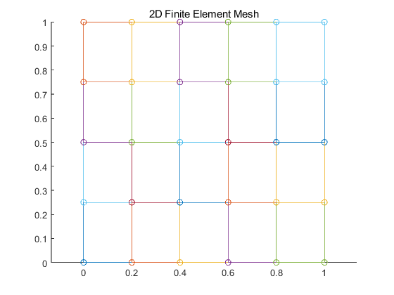

clc;
clear;
close all;
[v4e,c4e] = fem2d(4,5);
disp('v4e');
disp(v4e);
disp('c4e');
disp(c4e);
figure;
hold on;
for i = 1:size(v4e, 2)
m = c4e(v4e(:,i), :);
x = [m(1,1), m(2,1), m(3,1), m(4,1), m(1,1)];
y = [m(1,2), m(2,2), m(3,2), m(4,2), m(1,2)];
plot(x, y, 'o-');
end
hold off;
axis equal;
title('2D Finite Element Mesh');
function [v4e,c4e] = fem2d(m, n)
v4e = zeros(4, m * n);
i = 1;
k = 1;
while i < ((m)* (n+1))
a = [i, i+1, i+n+2, i+n+1];
if mod(i+1, n+1) == 0
i = i + 2;
else
i = i + 1;
end
v4e(:, k) = a;
k = k+1;
end
c4e = zeros((n+1)*(m+1),2);
g = 0;
h = 0;
for c = 1 : (n+1)*(m+1)
c4e(c,1) = g;
g = g + (1/n);
if g > 1
g = 0;
h = h + (1/m);
c4e(c+1:end,2) = h;
end
end
end
v4e
1 ~ 13번 열
1 2 3 4 5 7 8 9 10 11 13 14 15
2 3 4 5 6 8 9 10 11 12 14 15 16
8 9 10 11 12 14 15 16 17 18 20 21 22
7 8 9 10 11 13 14 15 16 17 19 20 21
14 ~ 20번 열
16 17 19 20 21 22 23
17 18 20 21 22 23 24
23 24 26 27 28 29 30
22 23 25 26 27 28 29
c4e
0 0
0.2000 0
0.4000 0
0.6000 0
0.8000 0
1.0000 0
0 0.2500
0.2000 0.2500
0.4000 0.2500
0.6000 0.2500
0.8000 0.2500
1.0000 0.2500
0 0.5000
0.2000 0.5000
0.4000 0.5000
0.6000 0.5000
0.8000 0.5000
1.0000 0.5000
0 0.7500
0.2000 0.7500
0.4000 0.7500
0.6000 0.7500
0.8000 0.7500
1.0000 0.7500
0 1.0000
0.2000 1.0000
0.4000 1.0000
0.6000 1.0000
0.8000 1.0000
1.0000 1.0000
